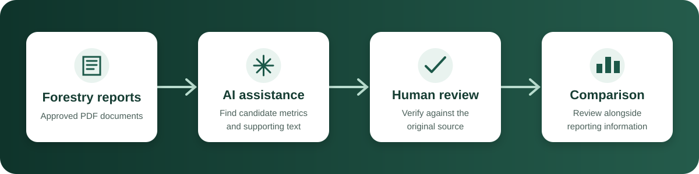

The challenge
Important forestry information can be distributed across long planning and inventory reports. Staff may spend significant time locating passages, transferring values into notes, and switching between tools.
Public project overview
A human-reviewed workflow that helps forestry staff find selected information in long PDF reports and compare it with reporting data in one place.
Document review
Reporting comparison
Illustrative interface and values only. No operational data is shown.
The project
The project combines document intake, AI-assisted extraction, human validation, and reporting comparison in a single Power Platform experience.
Important forestry information can be distributed across long planning and inventory reports. Staff may spend significant time locating passages, transferring values into notes, and switching between tools.
The app surfaces candidate metrics and supporting text, then keeps the source document and reporting comparison central to a structured human review.
Simplified workflow
The public diagram intentionally omits implementation details, environment configuration, and operational data.

Capabilities
The solution focuses on common tasks without treating AI output as a final determination.
Provides a consistent way to begin analysis of approved forestry planning and inventory PDFs.
Uses text recognition and AI assistance to locate selected planning, volume, and allowable-cut information.
Keeps reviewers responsible for checking dates, units, qualifiers, and supporting passages in the original document.
Places extracted candidates near relevant reporting information to reduce unnecessary tool switching.
Guides users through a repeatable sequence that supports clearer review and follow-up.
Reduces repetitive searching and copying so staff can spend more time evaluating the information.
Responsible AI
The workflow is built around human validation. Candidate results may be incomplete, inaccurate, or missing context and must be checked against authoritative sources.
Public repository boundary
This public version explains the project's purpose and design at a high level while keeping operational implementation private.
Questions
No. It intentionally excludes all deployable solution files, connections, environment settings, and operational configuration.
No. The filename, values, chart, and interface are synthetic illustrations created for this public page.
No. Every candidate result must be checked against the original source document and applicable authoritative information.
The project uses Microsoft Power Apps, Power Automate, AI Builder, and Power BI. The public page omits environment-specific implementation details.